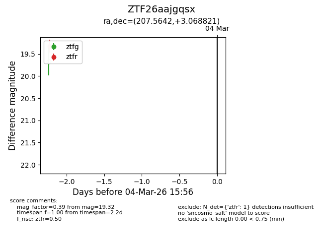
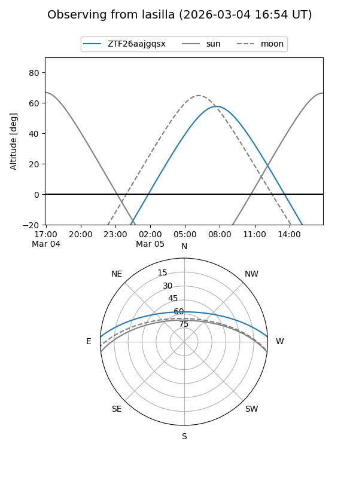
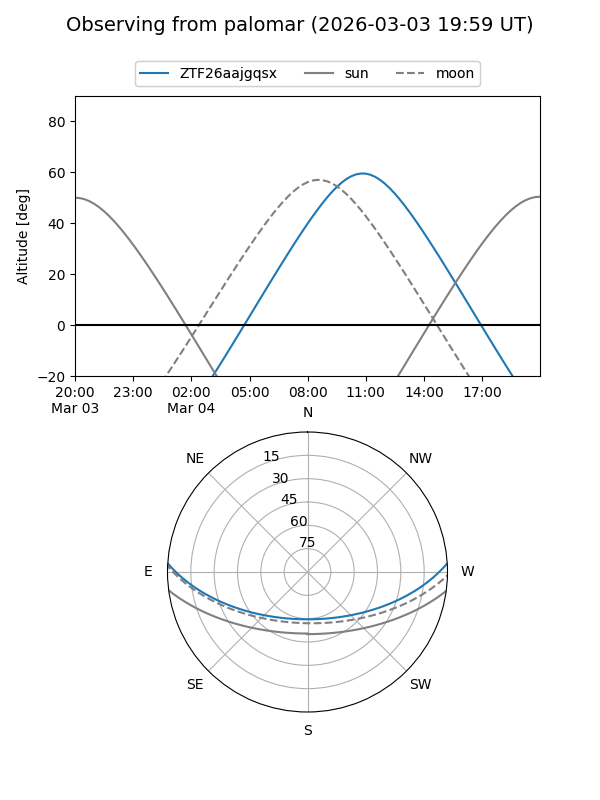

ZTF26aajgqsx
Target ZTF26aajgqsx at 2026-03-04 15:57
Aliases and brokers:
FINK: link
Lasair: link
ALeRCE: link
alt names
ZTF26aajgqsx (ztf,fink_ztf)
Coordinates:
equatorial (ra, dec) = 207.5642,+3.06882
equatorial (HMS+DMS) = 13:50:15.41,+03:04:07.76
galactic (l, b) = (335.7680,+62.13055)
Flags:
Photometry:
last ztfr=19.32
1 ztfr detections
Lightcurve

Visibility


Additional plots